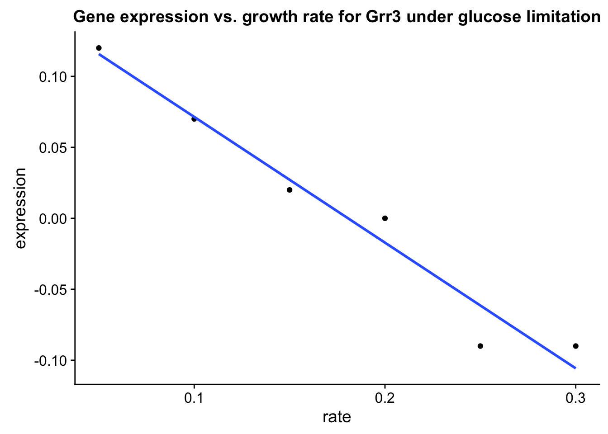

library(tidyverse)
#> ── Attaching packages ────────────────────────────────── tidyverse 1.2.1 ──
#> ✔ tibble 1.3.4 ✔ purrr 0.2.4
#> ✔ tidyr 0.7.2 ✔ stringr 1.2.0
#> ✔ readr 1.1.1 ✔ forcats 0.2.0
#> ── Conflicts ───────────────────────────────────── tidyverse_conflicts() ──
#> ✖ dplyr::filter() masks stats::filter()
#> ✖ dplyr::lag() masks stats::lag()
library(eda)NA, NaN and NULL
Don’t use use zeroes to represent missing data. 0 is valid observed value.
NA (Not Available) is most often use to represent missing_ex data.
NaN (Not a Number) is the result of an undefined operation, e.g. 0 / 0.
NULL means “undefined” and is only used in a programming context (i.e., a function that returns NULL). You can’t put NULL values in a data frame.
Let’s examine a data frame with some missing data.
# devtools::install_github('rnabioco/eda')
missing_ex
#> # A tibble: 30 x 5
#> group id name value1 value2
#> <dbl> <dbl> <chr> <dbl> <int>
#> 1 0 0 d NA NA
#> 2 0 1 a NA NA
#> 3 0 2 b NA NA
#> 4 0 2 c NA 8
#> 5 0 3 <NA> NA NA
#> 6 0 NA b NA NA
#> 7 1 0 d NA NA
#> 8 1 1 a 1 NA
#> 9 1 2 b NA NA
#> 10 1 2 c NA NA
#> # ... with 20 more rowsfilter with is.na()
You can identify variables with NA values by combining filter() and is.na().
# find rows where name is NA
missing_ex %>% filter(is.na(name))
#> # A tibble: 5 x 5
#> group id name value1 value2
#> <dbl> <dbl> <chr> <dbl> <int>
#> 1 0 3 <NA> NA NA
#> 2 1 3 <NA> NA NA
#> 3 2 3 <NA> NA NA
#> 4 3 3 <NA> 3 6
#> 5 4 3 <NA> NA NA
# find rows where id is *not* NA
missing_ex %>% filter(!is.na(id))
#> # A tibble: 25 x 5
#> group id name value1 value2
#> <dbl> <dbl> <chr> <dbl> <int>
#> 1 0 0 d NA NA
#> 2 0 1 a NA NA
#> 3 0 2 b NA NA
#> 4 0 2 c NA 8
#> 5 0 3 <NA> NA NA
#> 6 1 0 d NA NA
#> 7 1 1 a 1 NA
#> 8 1 2 b NA NA
#> 9 1 2 c NA NA
#> 10 1 3 <NA> NA NA
#> # ... with 15 more rowsna.omit()
You can remove all rows containing NA values with na.omit().
missing_ex %>% na.omit()
#> # A tibble: 1 x 5
#> group id name value1 value2
#> <dbl> <dbl> <chr> <dbl> <int>
#> 1 2 2 b 2 5NA valuesExclude NA values from statistical operations with na.rm = TRUE.
missing_ex$value1
#> [1] NA NA NA NA NA NA NA 1 NA NA NA NA NA NA 2 NA NA NA NA NA NA NA 3
#> [24] NA NA NA NA NA NA 4
# if NAs are present, the result is NA
sum(missing_ex$value1)
#> [1] NA
# solution: drop NAs from the calculation
sum(missing_ex$value1, na.rm = TRUE)
#> [1] 10sorted <- brauer_gene_exp %>%
select(systematic_name, rate, expression) %>%
arrange(rate, desc(expression))
sorted %>% head(10)
#> # A tibble: 10 x 3
#> systematic_name rate expression
#> <chr> <dbl> <dbl>
#> 1 YKR039W 0.05 6.64
#> 2 YJR152W 0.05 6.64
#> 3 YCR098C 0.05 6.64
#> 4 YDR281C 0.05 6.64
#> 5 YLL057C 0.05 6.64
#> 6 YGR087C 0.05 6.64
#> 7 YBR072W 0.05 6.64
#> 8 YAR071W 0.05 6.57
#> 9 YIL166C 0.05 6.50
#> 10 YBR093C 0.05 6.48
sorted %>% tail(10)
#> # A tibble: 10 x 3
#> systematic_name rate expression
#> <chr> <dbl> <dbl>
#> 1 YLR174W 0.3 -4.51
#> 2 YDR343C 0.3 -4.61
#> 3 YLR377C 0.3 -4.62
#> 4 YER065C 0.3 -4.75
#> 5 YDR342C 0.3 -4.83
#> 6 YDR343C 0.3 -4.92
#> 7 YNL117W 0.3 -4.97
#> 8 YJR095W 0.3 -5.14
#> 9 YKL217W 0.3 -5.44
#> 10 YMR303C 0.3 -6.04You can also use the View() function to examine the data in a spreadsheet-like viewer.
sorted %>% View()Use sample_n() and sample_frac() to randomly select rows from a large data set. Get a reproducible sample using set.seed()
brauer_gene_exp
#> # A tibble: 198,430 x 7
#> name BP
#> <chr> <chr>
#> 1 SFB2 ER to Golgi transport
#> 2 biological process unknown
#> 3 QRI7 proteolysis and peptidolysis
#> 4 CFT2 mRNA polyadenylylation*
#> 5 SSO2 vesicle fusion*
#> 6 PSP2 biological process unknown
#> 7 RIB2 riboflavin biosynthesis
#> 8 VMA13 vacuolar acidification
#> 9 EDC3 deadenylylation-independent decapping
#> 10 VPS5 protein retention in Golgi*
#> # ... with 198,420 more rows, and 5 more variables: MF <chr>,
#> # systematic_name <chr>, nutrient <chr>, rate <dbl>, expression <dbl>
# sample 1e5 rows
set.seed(47681)
brauer_gene_exp %>% sample_n(1e3)
#> # A tibble: 1,000 x 7
#> name BP
#> <chr> <chr>
#> 1 PUF6 regulation of transcription, mating-type specific
#> 2 PMP2 cation transport
#> 3 YPK1 protein amino acid phosphorylation*
#> 4 YDJ1 ER-associated protein catabolism*
#> 5 SER3 serine family amino acid biosynthesis
#> 6 PUF4 mRNA catabolism, deadenylylation-dependent decay*
#> 7 MTR2 poly(A)+ mRNA-nucleus export
#> 8 APE2 peptide metabolism
#> 9 RPN6 ubiquitin-dependent protein catabolism
#> 10 GLO1 glutathione metabolism*
#> # ... with 990 more rows, and 5 more variables: MF <chr>,
#> # systematic_name <chr>, nutrient <chr>, rate <dbl>, expression <dbl>
# sample 10% of the rows
set.seed(47681)
brauer_gene_exp %>% sample_frac(0.1)
#> # A tibble: 19,843 x 7
#> name BP
#> <chr> <chr>
#> 1 PUF6 regulation of transcription, mating-type specific
#> 2 PMP2 cation transport
#> 3 YPK1 protein amino acid phosphorylation*
#> 4 YDJ1 ER-associated protein catabolism*
#> 5 SER3 serine family amino acid biosynthesis
#> 6 PUF4 mRNA catabolism, deadenylylation-dependent decay*
#> 7 MTR2 poly(A)+ mRNA-nucleus export
#> 8 APE2 peptide metabolism
#> 9 RPN6 ubiquitin-dependent protein catabolism
#> 10 GLO1 glutathione metabolism*
#> # ... with 19,833 more rows, and 5 more variables: MF <chr>,
#> # systematic_name <chr>, nutrient <chr>, rate <dbl>, expression <dbl>Many biological databases store information in multiple tables. These tables are related by a common identifier: a gene name, or possibly a numeric identifer.
We will use two datasets brauer_gene_exp and yeast_prot_prop to illustrate how data from related tables can be combined using joining operations.
brauer_gene_exp contains gene expression data from yeast grown under different nutrient limitation conditions.
yeast_prot_prop contains descriptive data for yeast proteins.
Examine the two tables and identify common variables for linking. If the variables have different names, Use the by argument to left_join() to specify common variables.
gene_exp_rate <- brauer_gene_exp %>% select(systematic_name, rate, expression)
gene_mw <- yeast_prot_prop %>% select(ORF, Mw)
# Find rows from gene_exp_rate with a match in gene_mw and return all variables
left_join(gene_exp_rate, gene_mw, by = c("systematic_name" = "ORF"))
#> # A tibble: 198,430 x 4
#> systematic_name rate expression Mw
#> <chr> <dbl> <dbl> <dbl>
#> 1 YNL049C 0.05 -0.24 98919.4
#> 2 YNL095C 0.05 0.28 71197.2
#> 3 YDL104C 0.05 -0.02 45545.1
#> 4 YLR115W 0.05 -0.33 96256.0
#> 5 YMR183C 0.05 0.05 33716.9
#> 6 YML017W 0.05 -0.69 65589.0
#> 7 YOL066C 0.05 -0.55 67027.6
#> 8 YPR036W 0.05 -0.75 54409.3
#> 9 YEL015W 0.05 -0.24 61335.8
#> 10 YOR069W 0.05 -0.16 76459.9
#> # ... with 198,420 more rows
# Find rows from gene_exp_rate with a match in gene_mw and return only the gene_exp_rate variables
semi_join(gene_exp_rate, gene_mw, by = c("systematic_name" = "ORF"))
#> # A tibble: 197,543 x 3
#> systematic_name rate expression
#> <chr> <dbl> <dbl>
#> 1 YNL049C 0.05 -0.24
#> 2 YNL095C 0.05 0.28
#> 3 YDL104C 0.05 -0.02
#> 4 YLR115W 0.05 -0.33
#> 5 YMR183C 0.05 0.05
#> 6 YML017W 0.05 -0.69
#> 7 YOL066C 0.05 -0.55
#> 8 YPR036W 0.05 -0.75
#> 9 YEL015W 0.05 -0.24
#> 10 YOR069W 0.05 -0.16
#> # ... with 197,533 more rows
# Find rows from gene_exp_rate *without* a match in gene_mw
anti_join(gene_exp_rate, gene_mw, by = c("systematic_name" = "ORF"))
#> # A tibble: 887 x 3
#> systematic_name rate expression
#> <chr> <dbl> <dbl>
#> 1 YBR075W 0.05 -1.23
#> 2 YPR090W 0.05 -0.59
#> 3 YIR043C 0.05 -0.53
#> 4 YER109C 0.05 -0.24
#> 5 YGR272C 0.05 -0.61
#> 6 YDL038C 0.05 -0.91
#> 7 YJL012C-A 0.05 0.28
#> 8 YJL018W 0.05 0.03
#> 9 YFL057C 0.05 0.23
#> 10 YFL056C 0.05 0.32
#> # ... with 877 more rowsWe’ll use the brauer_gene_exp data set to illustrate how you can use summary statistics to capture relationships between many variables.
This plot illustrates the relationship between gene expression and growth rate for the Grr1/YJR090C gene under glucose limitation.
library(cowplot)
#>
#> Attaching package: 'cowplot'
#> The following object is masked from 'package:ggplot2':
#>
#> ggsave
exp_data <- brauer_gene_exp %>%
filter(nutrient == "Glucose" & systematic_name == "YJR090C")
exp_data %>%
ggplot(aes(x = rate, y = expression)) +
geom_point() +
geom_smooth(method = 'lm', se = FALSE) +
ggtitle("Gene expression vs. growth rate for Grr3 under glucose limitation")
You can also use lm() to model this relationship.
lm(expression ~ rate, exp_data)
#>
#> Call:
#> lm(formula = expression ~ rate, data = exp_data)
#>
#> Coefficients:
#> (Intercept) rate
#> 0.1600 -0.8857The results of many statistical operations (lm(), t.test(), cor.test()) are not tidy and relevant parameters are not easily assessible. The broom package provides a function called tidy() that tidies the results of these operations.
library(broom)
fit <- exp_data %>% lm(expression ~ rate, data = .)
tidy(fit)
#> term estimate std.error statistic p.value
#> 1 (Intercept) 0.1600000 0.01759329 9.094377 0.0008106615
#> 2 rate -0.8857143 0.09035079 -9.803061 0.0006069620Can we capture linear relationships between expression and rate for all combinations of variables? This is surprisingly easy.
# this takes ~60 seconds to run
models <- brauer_gene_exp %>%
group_by(systematic_name, name, nutrient) %>%
do(model = tidy(lm(expression ~ rate, data = .)))Plot the expression / rate relationship for the top-ten most significant genes. Color lines by nutrient.
topten <- models %>%
unnest() %>%
filter(name != "") %>%
arrange(p.value) %>%
head(10) %>%
select(systematic_name)
topten_exp <- brauer_gene_exp %>% semi_join(topten)
topten_exp %>%
ggplot(aes(x = rate, y = expression, color = nutrient)) +
geom_point() +
geom_smooth(method = 'lm', se = FALSE) +
facet_wrap(~systematic_name + name) +
scale_color_brewer(palette = "Set1")